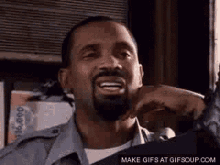

December 31, 2025
Lame New Year's advice is all about big resolutions, grinding harder, and chasing more. But nah, here are six flips for the big 2026. ✨
Most crash and burn because they're chasing some perfect version of yourself. Instead, try one small experiment each month—no pressure, no overhaul. Tiny tweaks stick way better than January drama.
Hustle culture says go nonstop, but real creativity and energy come from doing nothing sometimes. In 2026, block off unscheduled time. Good ideas show up when you're not forcing them.
Forget forcing "passion" or ambition. Find the stuff that energizes you naturally—however weird or boring it seems to others. That's where lasting success hides.
In a world full of AI shortcuts and multitasking, sustained attention is rare—and powerful. Train yourself to think, read, and write without distractions. It'll set you apart more than speed ever could.
Everyone says stack more habits and goals. No, start by cutting what drains you: bad commitments, clutter, old baggage. Letting go often frees up more growth than piling on new stuff.
Screens are easy, but in-person hangs and asks pay off way bigger (face-to-face requests work 34x better, apparently). In 2026, show up in the same room as people. That's where the good stuff happens.